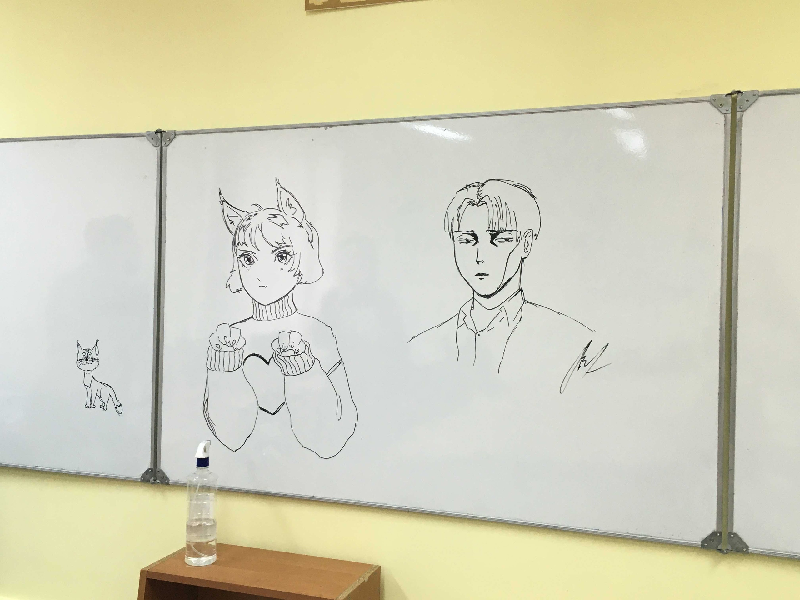

Настя Семенова
УИР-2, 2 курс
Настя - очень интересная.
Мне всегда нравится наблюдать за дизайнами ее сайтов, так как она безусловно творческий человек, а творческих людей я ценю :3 Также безмерно уважаю людей, у которыйх есть то, чем они любят заниматься. А Настя любит петь, рисовать. И мало того, что она это любит, так она еще и хорошо это делает.
Общие факты о Насте
На самом деле у нас с Настей много общего. Мы обе любим музыку и все, что с ней связано. Да и в целом искусство.
Творчество Насти (мировой шедевр)

Памятник культуры ренессанса, Web-ка, фото в цвете, октябрь 2021 г.